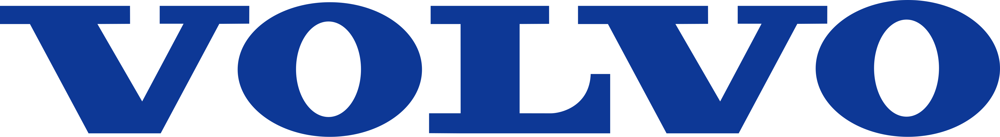
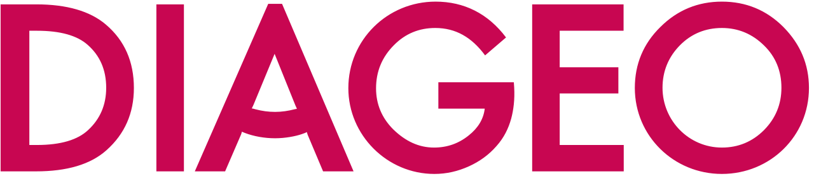
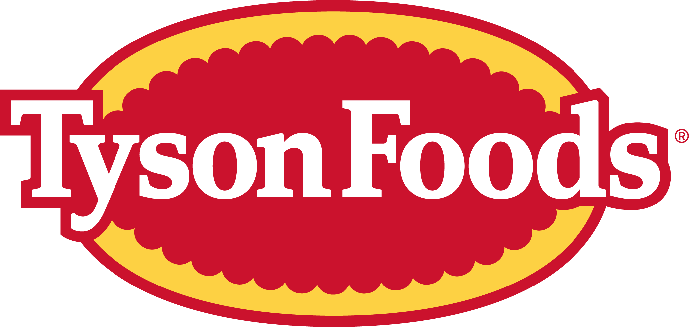
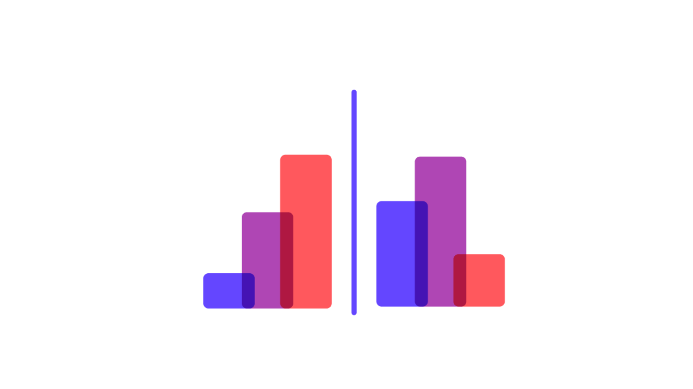
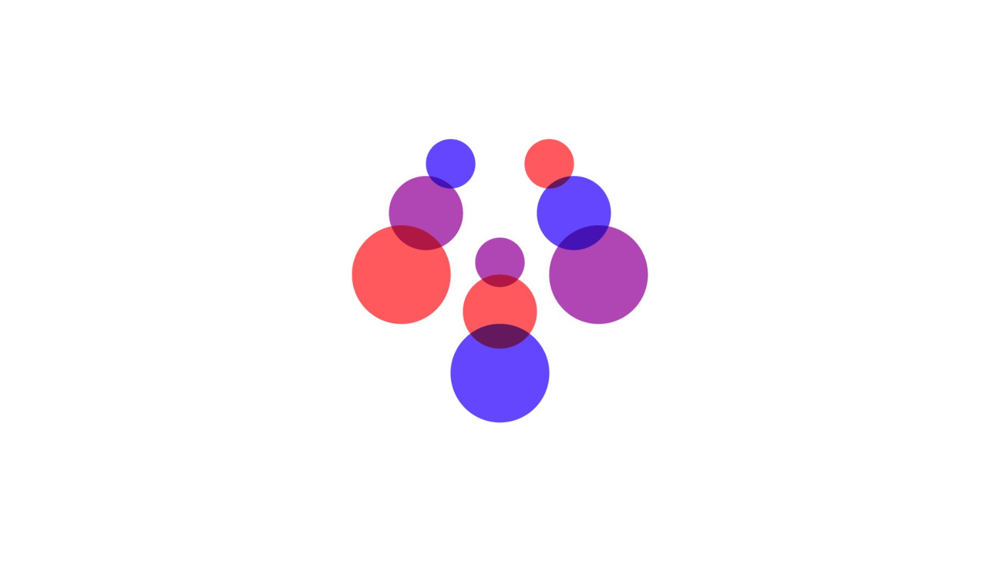

800+customers worldwide
226markets
120+languages
5M+articles processed daily




Still relying on vanity metrics? Today's PR measurement problem isn't a lack of data; it's the ability to trust it.
Signal AI gives PR and corporate communications teams the intelligence, automation, and executive-ready reporting to turn media coverage into credible business metrics — for every reporting cycle, campaign, or pitch.



You've run the campaigns, secured the coverage, and tracked the sentiment. Yet every reporting cycle, the board asks the same question: 'But what did this actually do for the business?' The problem isn't the PR strategy; it's the measurement infrastructure behind it. Vanity metrics like clip counts and AVEs simply don't cut it anymore. For most communications teams, answering that question means hours of manual data pulls, inconsistent or inaccurate metrics, and reports that land in inboxes yet don't drive decisions. Signal AI closes that gap. Our solutions give PR teams the credibility and confidence to answer those pressing questions: with numbers executives believe, reports they can defend, and a methodology that's clear to leadership, not just practitioners.



The credibility of a PR measurement report depends entirely on the data underlying it. Signal AI's entity and concept-based search, AIQ Search, captures coverage accurately and completely — without the noise that inflates volume metrics or the gaps that leave key coverage uncounted. Configurable Sentiment, Topic Analysis, Salience, and Readership Data combine to present data that reflects reality.
Reputation is a financial asset, and should be reported as such. Executives don't want methodology; they want narrative and numbers they can defend. Signal AI's reporting combines the reliability of AI-powered data with the expertise of industry analysts.
Reputation Score up +12 points after net-zero coverage.
Reputation ScoreShare of Voice slipped to #3 amid EV-policy debate.
Share of VoiceNegative sentiment spiked +9% on a pricing story.
Sentiment riskEarned media reach +38% on a product launch.
Media reachTier-one outlets cited the brand 2.1× more than peers, driving the quarter's gains.
Signal AI's analyst-led methodologies — such as our proprietary Reputation and Media Impact Scores — provide a single, credible metric to track over time and benchmark against competitors. Show exactly how coverage quality and brand perception are impacting the business, and what's driving the change.
As AI search grows, brands are being referenced or ignored based on their earned media footprint. Signal AI shows exactly how your brand appears in AI-generated answers — a view of reputation and LLM visibility in AI-driven search that no other enterprise tool currently offers.
A real-time view of an organization's external environment — AI-powered insights, unlimited search queries, competitive analyses, key message penetration, and more.
Explore hereIntegrate Signal AI's global data directly into BI applications via API, or direct MCP integration with your AI agent of choice — for a true 360-degree view of the business.
Explore hereThe best of AI and human curation — C-level analyses of what's driving reputation and how big a media impact, plus deeper competitive or topic-related insights.
Explore hereExecutive Briefings, Newsletters, and Reputation Reports built for decision-makers — the narrative the C-suite needs, clearly, credibly, and on time.
Explore hereNot finding what you're looking for? Get in touch here.

World-class, real-time data and intelligence, accessed through natural language prompts, data APIs, intelligent agents, and intuitive workflows.

Our AIQ engine ingests breadth and depth from our global dataset — traditional and social media, broadcast, podcast, regulatory filings, and alternative data — with translation coverage across 120+ languages.

Built on an AI-native foundation yet AI-powered and human-led, leveraging in-house analysts — empowering you to take action and make more informed, confident decisions.
Signal AI's reporting is an invaluable strategic tool for us. We have a reporting mechanism that's seen as truly strategic across the business. Our key stakeholders recognize the value of Signal AI's insights and actively promote them across the management team, underlining the strategic value of communications when it comes to tracking and understanding our industry reputation.
Signal AI's ability to process and analyze global media sources in real-time provides us with crucial, context-rich insights.
We're big fans of Signal AI because of how it helps us be more effective communicators. We use the data to understand how our key messages and thought leadership themes are performing.

How to leverage PR measurement and analytics to drive communications strategies that are indispensable to senior stakeholders.
Watch now
Impressive numbers met with blank stares? The problem isn't your results — it's how you're reporting them.
Read article
A PR innovator and founder of measuredPR who developed the Media Impact Scoring Model at Western Union.
Listen nowSee how Signal AI transforms coverage data into boardroom-ready proof of impact.